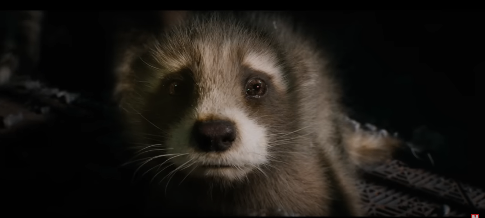
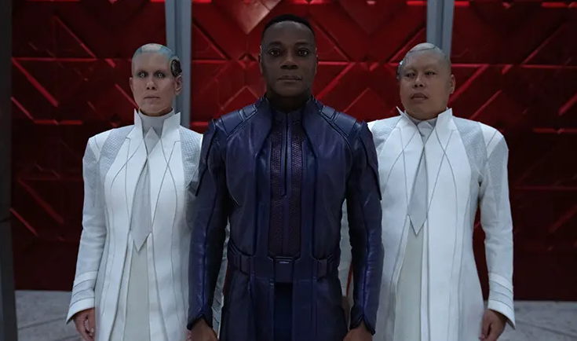

Review Film Guardians of the Galaxy Vol. 3 (2023)
Setelah Ant-Man and the Wasp: Quantumania, kita akan kedatangan film terbaru yang
tergabung dalam MCU Phase 5 pada Mei 2023 ini, yaitu Guardians of the Galaxy Vol. 3. Film
ketiga dari para Guardians ini pun terbilang menjadi momen perpisahan untuk >James Gunn yang
akan hengkang dari MCU karena telah resmi jadi salah satu petinggi DC Studios.
Sinopsis film Guardians of the Galaxy Vol. 3 mengisahkan para Guardians yang mencoba
menyesuaikan hidup baru mereka di Knowhere. Namun, kehidupan damai mereka terusik ketika masa
lalu kelam dari Rocket Raccoon justru muncul kembali ke permukaan. Hal ini pun membuat Peter
Quill mengajak para Guardians untuk menjalani sebuah misi baru yang berkaitan dengan masa
lalunya Rocket.
Kisah masa lalu Rocket yang berhasil bikin pilu

Berdasarkan sinopsisnya, mungkin sudah banyak dari kamu yang bisa menebak bahwa
Guardians of the Galaxy Vol. 3 akan lebih berfokus pada kisahnya Rocket Raccoon. Yap,
dalam film ini kita akan bisa melihat origin story dari Rocket yang berkaitan dengan
villain utamanya, yaitu High Evolutionary.
Harus diakui, kisahnya Rocket pun menurut KINCIR menjadi salah satu origin story paling
memilukan yang ada pada MCU sejauh. Rasanya aneh jika kamu enggak merasa sedih sedikitpun selama
menonton film ini, terlebih jika kamu merupakan pencinta hewan.
Selain itu, penggunaan alur maju-mundur antara flashback origin-nya Rocket dengan
konflik pada masa sekarangnya juga enggak terlalu membingungkan layaknya Eternals (2021).
Namun, memang ada beberapa transisi ke adegan flashback yang terasa lumayan aneh, walau
enggak terlalu mengganggu.
Terlepas dari kekurangan tersebut, Guardians of the Galaxy Vol. 3 masih memiliki
penceritaan yang lebih rapi dan emosional pada MCU Phase 5 sejauh ini. Jika dibandingkan dengan
Quantumania, Guardians 3 jelas memiliki cerita yang jauh lebih solid.
Performa memukau yang tak dibarengi penokohan mendalam

Pada Guardians of the Galaxy Vol. 3 ini, kita kedatangan dua karakter baru yang memiliki
peran cukup sentral dalam ceritanya. Mereka adalah High Evolutionary (Chukwudi Iwuji) yang jadi
villain utamanya serta Adam Warlock (Will Poulter) yang menjadi ancaman baru bagi Guardians.
Chukwudi Iwuji pun berhasil tampil mengancam sebagai villain dan membuat kisahnya Rocket menjadi
semakin terasa mengenaskan. Hanya saja, menurut KINCIR performa memukau Iwuji enggak dibarengi
dengan penjelasan latar belakang High Evolutionary menjadi villain yang detail. Hal ini tentunya
membuat penonton jadi kurang mengenal siapa sosok High Evolutionary sebelum jadi villain.
Selain itu, mungkin beberapa dari kamu yang kurang suka dengan cara film ini menghadirkan Adam
Warlock yang ternyata kepribadiannya beda jauh dengan yang kita lihat pada trailer.
Beruntungnya, performa Will Poulter berhasil menyelamatkan penggambaran sosok Adam Warlock pada
film ini. Alasan Adam Warlock bersikap seperti itu dalam film ini juga sebenarnya dijelaskan,
meski lagi-lagi tak detail.
Namun, segala kekurangan kecil itu berhasil tertutupi dengan chemistry yang sangat apik
dari para anggota Guardians. Film ini benar-benar berhasil menggambarkan bahwa para Guardians
kini sudah memiliki hubungan layaknya keluarga, bukan sekadar orang asing yang terlibat pada
kelompok yang sama. Hal ini tentunya juga enggak lepas dari chemistry para pemeran setiap
anggota Guardians-nya.
***
Secara garis besar, perpaduan komedi dan kisah emosional yang pas berhasil membuat
Guardians of the Galaxy Vol 3 menjadi ending yang manis bagi sejumlah karakternya.
Film ini pun memiliki dua adegan post credit yang wajib kamu tunggu. Jika kamu
berminat, film ini sudah bisa kamu saksikan pada bioskop Indonesia mulai 3 Mei 2023.